Site Overview & Layout
Complete solar installation project documentation for Easely II renewable energy facility in Riverside County, California. Project includes multi-block tracker systems with pile foundations, torque tubes, dampers, and integrated electrical equipment. Construction phased across multiple blocks with color-coded pile types and standardized equipment deployment protocols.
Site Master Plan
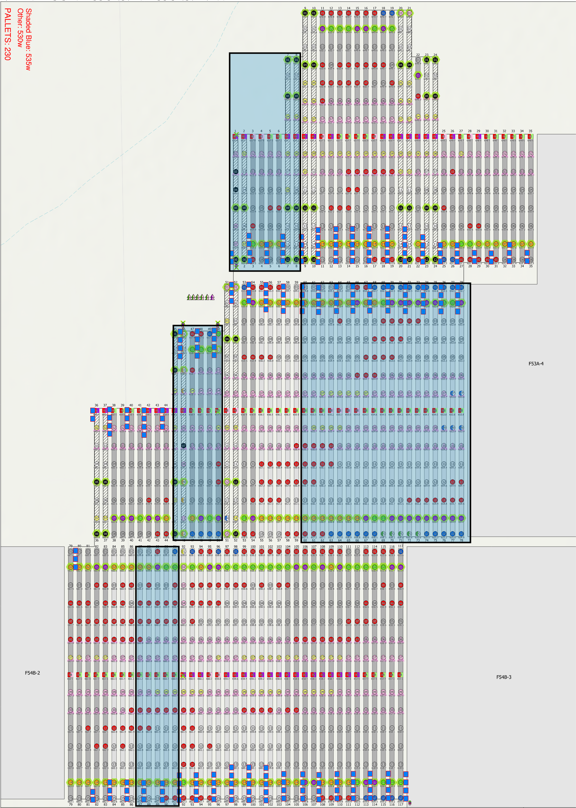
Project Layout: Complete site organization showing block distribution (red and blue zones), equipment staging areas, and primary access corridors. Multi-block configuration optimized for phased construction and equipment deployment.
Block Organization: Color-coded blocks facilitate construction sequencing and material logistics. Blocks marked for tracker installation, foundation work, and electrical connections.
Block Layout & Pile Leave-Out Areas
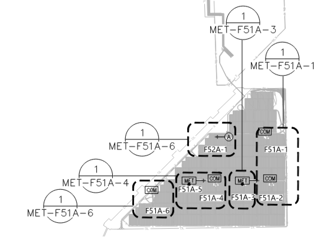
Block Arrangement: Detailed block layout with equipment staging zones. Gray sections show blocks, while red diagonal pattern indicates pile leave-out zones where semi-trucks need access for equipment delivery.
Access Control: Designated corridors ensure heavy equipment can reach staging areas before final foundation installation. Phased approach allows construction flexibility and material logistics optimization.
Pile Installation Overview
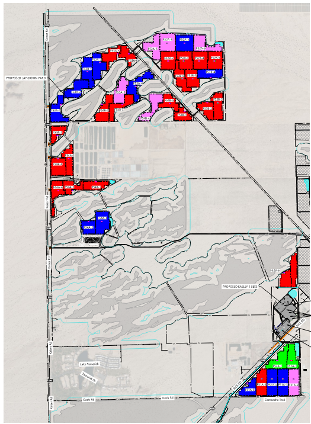
Foundation Design: Complete pile elevation for tracker foundation system. Multiple pile types color-coded by specification showing W6x column sections with standardized spacing across blocks FS2A-5 and FS2A-6.
System Components: Includes arrays, motor mounts, inverter support piles, LBD (Load Bearing Device) supports, dead-end piles, seismic dampers, and standardized rack type designations for field installation reference.
Pile Foundation Specifications
Standardized pile specifications for solar tracker foundations. Color-coded system facilitates field identification and quality control. Multiple pile types deployed across project blocks with defined load ratings and positioning protocols.
Pile Installation Detail - FS2A Blocks
Foundation Design: Detailed pile elevation for dual tracker blocks showing complete foundation system. Multiple pile types color-coded by specification with W6x column sections and standardized spacing.
Specifications: Includes arrays, motor mounts, inverter piles, LBD supports, dead-end piles, dampers for seismic/wind resistance, and rack type designations (Edge, Exterior, Interior).
Torque Tube & Array Configuration
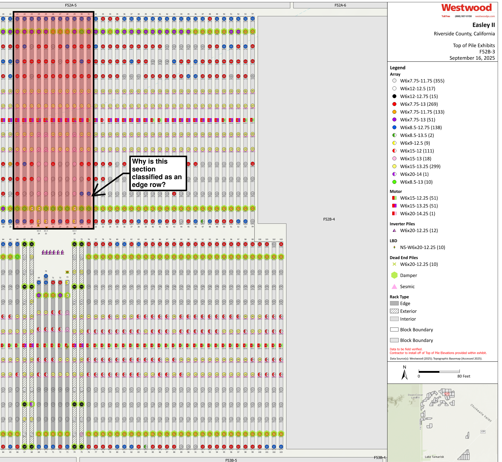
Torque Tube System: Horizontal drive system supporting tracker rotation. Multi-section design with color-coded types (Orange, Purple, Black, Blue, Galvanized). Each section rated for specific loads and bearing configurations.
Damper Integration: Double damper placement at critical points for seismic and wind load distribution. Mounting specifications and load ratings per AISC standards.
Vertical Array Assembly
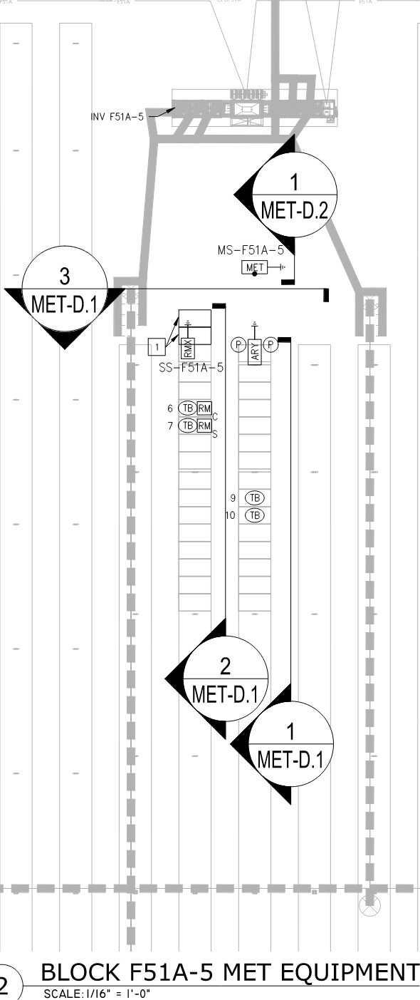
Pile Stacking: Vertical assembly showing complete foundation stack from base to tracker mounting points. Red and blue circles indicate mechanical connections. Hatched areas show bracing and lateral support members.
Assembly Sequence: Foundation elements arranged for crane installation. Color differentiation enables field crews to verify correct component placement and orientation.
Pile Shape & Color Reference (Set 1)
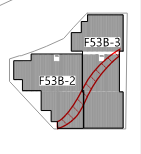
Specification System: Comprehensive pile catalog with structural section designations (W6x12-12.75, W7x75-11.75, W8x5-12.75, etc.) paired with color identification system.
Color Standards: Standardized paint/coating colors ensure rapid identification. Examples: Blue-White, Pink, Red-Purple, Black, Orange combinations for different W-section sizes.
Pile Shape & Color Reference (Set 2)
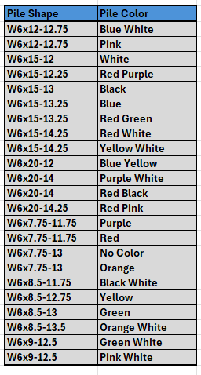
Additional Specifications: Extended pile catalog covering full range of available W-sections with corresponding color codes for field identification and quality control verification.
Installation Verification: Color-coded system enables rapid field verification of correct component delivery and placement during installation sequence.
Pile Type Reference Tables
W6x12-12.75: Blue White
W6x15-13: Black
W7x75-11.75: Purple
W8x5-12.75: Yellow
W8x8-13.5: Green
W6x12-12.75: Black
W6x15-14: Blue White
W7x75-11.75: Orange
W8x8-13.5: Green White
W9x12.5: Pink White
Spacing: Standardized 5-10 foot grid for array foundations
Depth: 8-15 feet depending on soil bearing capacity
Load Rating: 50-100 kips per pile
Coating: Hot-dip galvanized or paint as specified
Inspection: Visual and dimensional verification prior to installation
Certification: Mill certs provided for all structural steel
Marking: Color-coded bands for field identification
Documentation: As-built layout recorded for each block
Solar Tracker System Installation
Two-axis solar tracking system with motorized rotation capability. Integrated damping system for wind and seismic load management. Complete equipment specification including torque tubes, drive motors, bearings, and control interface points.
Full Array Pile Grid Installation
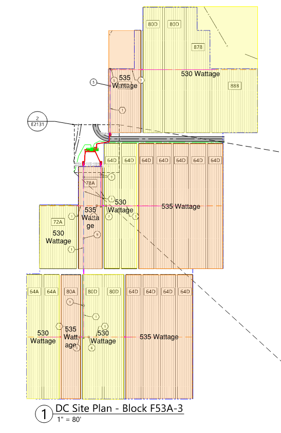
Array Scale: Large-scale pile grid showing systematic foundation layout across full tracker footprint. Hundreds of piles arranged in defined rows and columns supporting continuous tracker arrays.
Color Pattern: Color differentiation by pile location and loading class. Consistent pattern ensures correct component delivery and installation sequencing across the facility.
Equipment Installation Plan
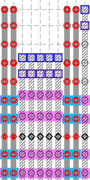
Equipment Routing: Drive motor and control system positions optimized for maintenance access and electrical connectivity. Equipment clusters support multiple tracker arrays across block (F51A configuration shown).
Integration Points: Connection points marked for power distribution, control signals, and mechanical drive linkages. Installation sequence designed for efficient equipment deployment with minimal rework.
Construction Access Restrictions
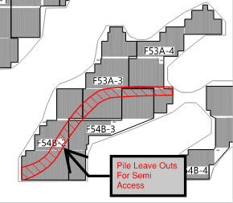
Access Corridors: Designated routes for heavy equipment delivery and installation vehicles. Red diagonal pattern shows pile leave-out zones where foundations are NOT installed to maintain semi-truck access.
Phasing Strategy: Installation sequence allows equipment delivery before final pile installation. Corridors eliminated once equipment is positioned and secured in place.
Electrical Equipment & Inverter Installation
Power conversion and distribution system with distributed inverters across project blocks. Each inverter rated for specific wattage capacity with individual DC combiner boxes, AC disconnect switches, and interconnection points. Integration with main facility electrical system via underground conduit.
Meteorological Equipment Placement
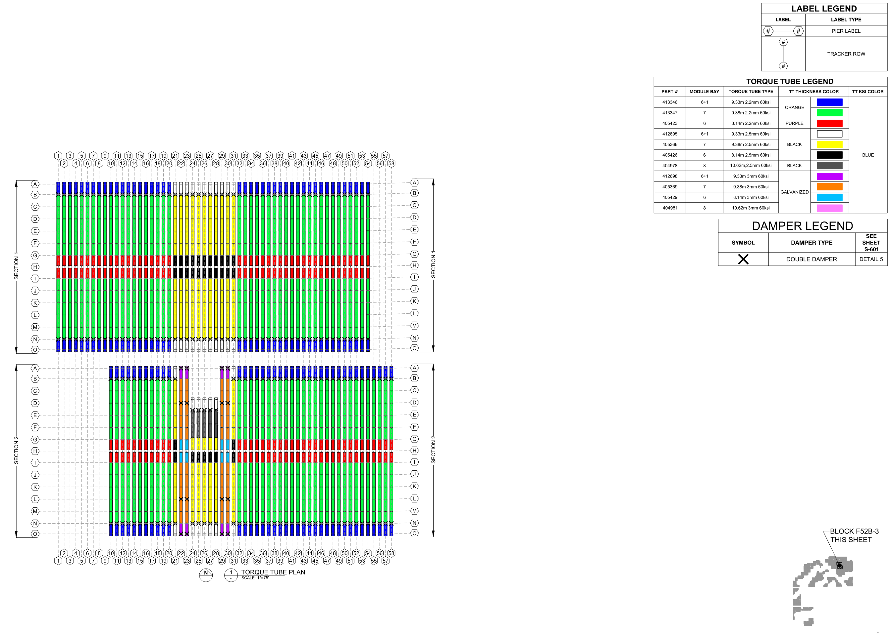
Monitoring System: Distributed meteorological equipment (MET-D.1, MET-D.2, etc.) provides real-time environmental data. Sensors measure wind speed, temperature, irradiance, and humidity. Block E51A-5 configuration shown with equipment staging and connection points.
Data Integration: MET stations networked to central monitoring system. Data feeds tracker control algorithms for optimal positioning and performance prediction.
Inverter Distribution Layout
Equipment Staging: Inverter positions distributed across block (F51A configuration) for optimal cable runs and load distribution. Each inverter served by dedicated DC combiner box and AC disconnect switch.
Electrical Architecture: String inverters configured for central monitoring. Redundant switching provides isolation capability for maintenance without facility shutdown.
DC System Layout - Block F53A-3
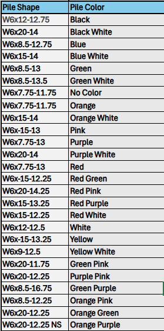
System Design: Multiple 530W and 535W inverters integrated with color-coded wiring and equipment labels. Each inverter rated for specific DC array capacity with thermal management and cooling provisions.
Electrical Connections: Defined conduit routes (shown in colored lines) connect DC combiners to inverters to AC disconnect switches. Underground routing minimizes visual impact and protects equipment from weather exposure.
Electrical System Specifications
Type: String Inverters
Power Range: 530W - 535W per unit
Monitoring: Real-time performance tracking
Protection: DC and AC disconnect switches
Wind Speed Sensor: 3-cup anemometer
Temperature: RTD sensor
Irradiance: Pyranometer
Data Logger: 10-minute interval logging
Configuration: Multiple string arrays per inverter
Voltage: 600V DC system
Overcurrent: Breaker protected per NEC
Disconnects: Readily accessible isolation points
Conduit: Schedule 40 PVC underground
Wiring: PV-rated copper conductors
Grounding: Solid core equipment grounding
Testing: Insulation resistance per IEEE 1415
Equipment Data Quality Notes
All installation diagrams and equipment placement plans prepared in accordance with IEEE 1682 standards for photovoltaic systems. Equipment specifications meet NEC Article 690 requirements for solar photovoltaic installations. MET equipment certification provided by manufacturer with calibration valid through project operational phase.